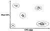

| Previous | Table of Contents | Next |
| Next Packet | ||
| Current | ||
| Packet | Small | Large |
| Small | 0.8 | 0.25 |
| Large | 0.2 | 0.2 |
If the performance of the network is affected by the order of the packet sizes, then measure the transition probabilities directly on the network along with the relative frequencies.
Generally, the measured workload consists of a large number of components. For example, several thousand user profiles may have been measured. For analysis purposes, it is useful to classify these components into a small number of classes or clusters such that the components within a cluster are very similar to each other. Later, one member from each cluster may be selected to represent the class and to study the effect of system design decisions on the entire class.
Figure 6.5 shows the CPU and disk I/O demands of 30 jobs. As shown, the jobs can be classified into five clusters. Thus, instead of using 30 jobs for each analysis, just 5 jobs can be used to represent the average resource demands of each cluster.
To characterize measured workload data using clustering, the steps are as follows:
Each of these steps will now be discussed in detail.

FIGURE 6.5 Hypothetical example of 30 jobs in five clusters.
Generally, the number of components measured is too large to be used in the clustering analysis. Therefore, it is necessary to select a small subset. For example, several thousand user sessions may have been measured, but only a few hundred may be used in clustering analysis.
If sampling is done carefully, the components that were not used in clustering analysis will show behavior similar to those that were used in the analysis. In fact, at the end of the clustering exercise, one must try to assign each and every component to an appropriate cluster. The percentage of components not assignable to any cluster is a measure of sampling effectiveness.
One method of sampling is random selection. This results in a representative subset. However, if the goal of the workload characterization study is to design a workload for examining the impact of a particular device, for instance, a disk only those components that are heavy consumers of the disk would provide meaningful information. Therefore, the components that top the list of consumers of that resource should be selected for workload characterization. Similarly, the most frequently used components should be selected if the goal of the study is to identify the components for better human interface and user training.
Each component has a large number of parameters (resource demands). Some of these parameters are important either because they belong to the bottleneck resource or to the most expensive resource. Less important parameters can be omitted from the clustering analysis, thereby reducing the analysis cost.
The two key criteria for selecting parameters are their impact on performance and their variance. Parameters that do not impact system performance should be omitted. For example, if the number of lines printed has no significant impact on the system performance, this parameter should be eliminated from the clustering analysis. The parameters that change little among clusters have no impact on clustering, and therefore, they can be omitted from the analysis.
One method to determine the minimum subset of parameters is to redo clustering with one less parameter and count the number of components that change their cluster membership. If the fraction of such components is small, the parameter can be removed from the list. Principal-component analysis, described in Section 6.6, can be used to identify the factors (and hence parameters) having the highest variance.
If the distribution of a parameter is highly skewed, one should consider the possibility of replacing the parameter by a transformation or function of the parameter. For example, in one study, logarithmic transformation of CPU time was used because the analyst argued that two programs taking 1 and 2 seconds of CPU time are almost as different as those taking 1 and 2 milliseconds. Thus, the ratio of CPU time, rather than their difference, was considered more important. Several transformations and conditions under which they are appropriate are discussed in Section 15.4.
The data points with extreme parameter values are called outliers, particularly if they lie far away from the majority of the other points. Such outliers can have a significant effect on the maximum or minimum values (or on the mean and variance) of parameters observed. Since these values are used in normalization (described next), their inclusion or exclusion may significantly affect the final results of clustering. Only those outlying components that do not consume a significant portion of the system resources should be excluded. Thus, for example, a disk backup program may make a number of disk I/O’s that are an order of magnitude greater than these by other programs, so it cannot be excluded from a workload characterizing those sites where backups are done several times a day. On the other hand, it may be appropriate to exclude it if backups are done a few times per month.
| Previous | Table of Contents | Next |
){kind=link}
){kind=link}